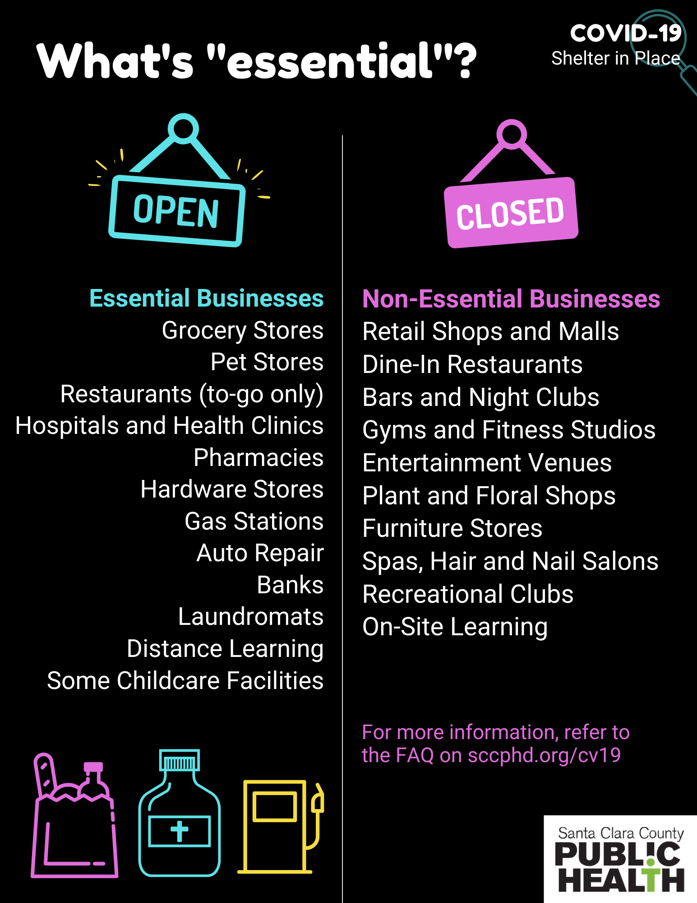
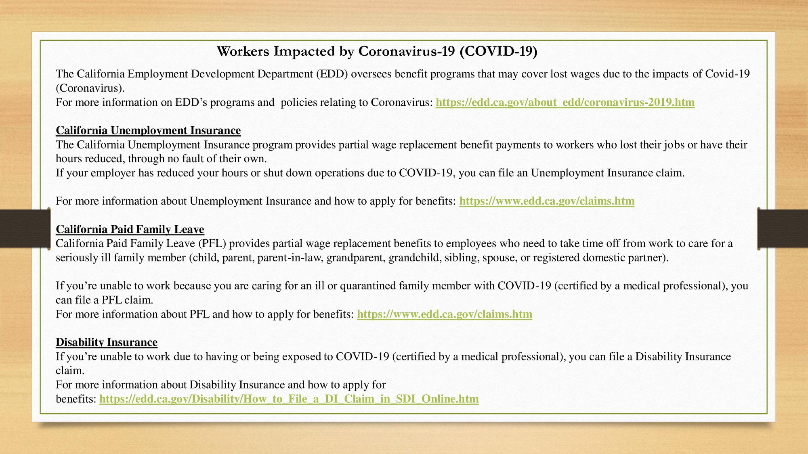
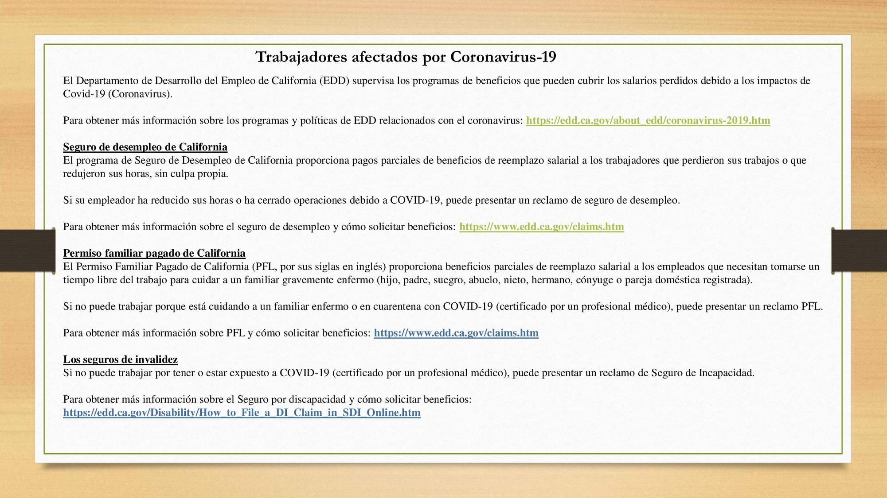

<section>
    <div class="row">
		<div class="columns small-12 hide-for-medium">
			{% include coronavirus_menu.html %}
		</div>
		<div class="left-subnav medium-3 columns hide-for-small-only" data-sticky-container>
			<nav class="columns sticky" data-sticky data-top-anchor="positions" data-btm-anchor="clsepa" data-sticky-on="medium">
				<div id='nav-magellan' data-magellan>
					{% include coronavirus_menu.html %}
				</div>
			</nav>
		</div>
      <div class="large-9 columns">
		<h1>COVID-19 Information and Resources</h1>
		<p>Last Updated 3/27/2020</p>

      <h4 id="shelter" data-magellan-target="shelter">Shelter-in-Place Order</h4>
	  <div class="inner">
	  <p>There is a Shelter-in-Place Mandate affecting six San Francisco Bay Area counties: San Francisco, Marin, Santa Clara, San Mateo, Alameda and Contra Costa. Order starts at 12:01 a.m. Tuesday, March 17 and will be in place until at least April 7. </p>
	  <p>
	  <ul>
	  <li><a href="https://www.sccgov.org/sites/phd/news/Pages/press-release-03-16-20.aspx" target="_blank">Press Release</a></li>
	  <li><a href="https://www.sccgov.org/sites/phd/DiseaseInformation/novel-coronavirus/Pages/order-health-officer-031620.aspx" target="_blank">Shelter-at-Home Order</a></li>
	  <li><a href="https://www.sccgov.org/sites/phd/DiseaseInformation/novel-coronavirus/Pages/frequently-asked-questions.aspx" target="_blank">Frequently Asked Questions (FAQ)</a></li>
	  <li>Downloadable FAQ: <a href="https://www.sccgov.org/sites/phd/DiseaseInformation/novel-coronavirus/Documents/FAQ-Shelter-in-Place-03-16-20.pdf" target="_blank">English</a> - <a href="https://www.sccgov.org/sites/phd/DiseaseInformation/novel-coronavirus/Documents/FAQ-Shelter-in-Place-03-16-20-Spanish.pdf" target="_blank">Spanish</a> - <a href="https://www.sccgov.org/sites/phd/DiseaseInformation/novel-coronavirus/Documents/FAQ-Shelter-in-Place-03-25-20-Vietnamese.pdf" target="_blank">Vietnamese</a> - <a href="https://www.sccgov.org/sites/phd/DiseaseInformation/novel-coronavirus/Documents/FAQ-Shelter-in-Place-03-25-20-Chinese.pdf" target="_blank">Chinese</a> </li>
	  </ul>
	  </p>
	  <p></p>
	  <p><a href="img/essential-sp.png" target="_blank">Spanish</a> - <a href="img/essential-viet.png" target="_blank">Vietnamese</a> - <a href="img/essential-ph.png" target="_blank">Tagalog</a> - <a href="img/essential-ch.png" target="_blank">Mandarin</a> </p>
	  </div>
	  <hr>	

      <h4 id="county" data-magellan-target="county">County Public Health Updates</h4>
	  <div class="inner">
	  <p>For the latest update from the County of Santa Clara ​Public Health Department, go to: <a href="https://www.sccgov.org/sites/scc/Documents/home.html" target="_blank">www.sccphd.org/coronavirus</a>. </p>
	  <p>For local emergencies, click the following link to sign up for text messages: <a href="https://www.sccgov.org/sites/oes/alertscc/Pages/home.aspx" target="_blank">sccgov.org/sites/oes/alertscc/Pages/home.aspx</a>. The alerts do not provide as much information as can be found generally on the Public Health website, or as much information as is provided on our COVID-19 response FAQ: <a href="https://www.sccgov.org/sites/phd/DiseaseInformation/novel-coronavirus/Pages/home.aspx" target="_blank">www.sccphd.org/CV19</a>.
	  <p>If you have additional questions or concerns, please call 2-1-1, then press 4 for “community services”. </p>
	  <p>Follow on social media: <br>County of Santa Clara ​Public Health Department Facebook: <a href="https://facebook.com/sccpublichealth" target="_blank">facebook.com/sccpublichealth</a> <br>County of Santa Clara ​Public Health Department Twitter: <a href="https://twitter.com/HealthySCC" target="_blank">twitter.com/HealthySCC</a></p>
	  </div>
	  <hr>	

      <h4 id="city" data-magellan-target="city">City of Mountain View Updates</h4>
	  <div class="inner">
	  <p>The City of Mountain View continues to respond rapidly and aggressively to the COVID-19 pandemic and mitigate the economic impacts on residents and businesses. The City provides a helpful email with updates called The Briefing. Please sign up by texting ‘MVCOVID’ to 22828.</p>
	  <p>3/16/2020 <a href="https://spark.adobe.com/page/UHELog2PMwHCG" target="_blank">Volume 1 </a> <br>
	  3/17/2020 <a href="https://spark.adobe.com/page/KRwMK64QLdO20" target="_blank">Volume 2</a> <br>
	  3/18/2020 <a href="https://spark.adobe.com/page/Kg0pRluLf2AjD" target="_blank">Volume 3</a> <br>
	  3/19/2020 <a href="https://spark.adobe.com/page/idHwt25URtH4C" target="_blank">Volume 4</a> <br> 
	  3/20/2020 <a href="https://spark.adobe.com/page/NjGhprO2nL8a8" target="_blank">Volume 5</a> <br>
	  3/23/2020 <a href="https://spark.adobe.com/page/fQu7GZLktGhU3" target="_blank">Volume 6</a> <br>
	  3/25/2020 <a href="https://spark.adobe.com/page/VOM5uVdcdxq8O" target="_blank">Volume 7</a> <br>
	  3/26/2020 <a href="https://spark.adobe.com/page/SJg12wUfiCNfJ" target="_blank">Volume 8</a> <br>
	  3/27/2020 <a href="https://spark.adobe.com/page/z8umAvLjhcNjm" target="_blank">Volume 9</a>
	  </p>
	  <p>Follow the City of Mountain View for more up to date information relating to COVID-19. <br><a href="http://mountainview.gov/virus" target="_blank">COVID-19 Website</a> - <a href="http://twitter.mountainview.gov/" target="_blank">Twitter</a> - <a href="http://facebook.mountainview.gov/" target="_blank">Facebook</a> - <a href="http://mountainview.gov/Instagram" target="_blank">Instagram</a> - <a href="http://mountainview.gov/YouTube" target="_blank">YouTube</a> </p>
	  </div>
	  <hr>	
	  
      <h4 id="state" data-magellan-target="state">Other Agency Updates</h4>
	  <div class="inner">
	  <p>
	  <ul>
	  <li><a href="https://covid19.ca.gov/" target="_blank">View updates from the state</a></li>
	  <li><a href="https://a24.asmdc.org/covid-19" target="_blank">View updates from Assemblymember Marc Berman (Assembly District 24)</a></li>
	  </ul>
	  </p>
	  <p><b>Caltrain Updates </b></p>
	  <p>Caltrain to Implement Additional Weekday Service Reductions </p>
	  <p>Due to significant reductions in ridership resulting from the coronavirus (COVID-19) pandemic, Caltrain will further reduce weekday train service indefinitely starting Monday, March 30. </p>
	  <p>The modified weekday schedule will operate 42 trains per day, rather than the usual 92. Trains will make all local weekday stops between San Jose and San Francisco every 30-60 minutes, depending on time of day. Caltrain will continue operating two Gilroy service trains during the morning and afternoon peak commute. Limited and Baby Bullet service will be suspended until further notice. </p>
	  <p>The updated weekday schedule will be available at <a href="http://www.caltrain.com/" target="_blank">www.caltrain.com</a>. </p>
	  <p>Weekend service will continue to operate normally. </p>
	  <p>These additional schedule reductions are necessary to mitigate severe fare revenue losses while still providing essential transit services to all stations along Caltrain’s corridor. Caltrain is monitoring ridership during this time and may implement additional service changes as needed while ensuring that riders can maintain social distancing in accordance with the Centers for Disease Control and Prevention (CDC) <a href="https://www.cdc.gov/coronavirus/2019-ncov/prepare/prevention.html" target="_blank">recommendations</a>. Caltrain continues to maintain daily onboard cleaning and sanitation protocols in compliance with Environmental Protection Agency (EPA) guidelines. </p>
	  <p>Caltrain is assessing the impact that reduced ridership is having on the agency’s ability to maintain operations in the coming months. One-way and Day Pass ticket sales have declined by approximately 86% from levels prior to the current health crisis. On the first day of the Bay Area-wide Public Health Order, Caltrain recorded a 95% decrease in average daily ticket sales. With no other dedicated source of funding, Caltrain relies on fares to cover 70% of the system’s operating costs. </p>
	  <p>Due to severe ridership declines as a result of the public health order, transit agencies, like Caltrain, are now experiencing serious financial challenges. Federal legislation has been approved that could provide transit agencies throughout the country with funding to maintain operations. Caltrain is working with the Metropolitan Transportation Commission to determine how those funds will be allocated throughout the Bay Area. </p>
	  <p>For more information about Caltrain schedules and fares or for help planning your trip, call Caltrain Customer Service at 1.800.660.4287 (TTY 650.508.6448) or visit <a href="http://www.caltrain.com/" target="_blank">www.caltrain.com</a>. </p>
	  <p><b>VTA Updates</b></p>
	  <p><a href="pdf/vtaupdate03212020.pdf" target="_blank">Update for the week of March 21, 2020</a></p>
	  <p>Effective March 26, <a href="https://www.vta.org/blog/vta-operator-trainee-tests-positive-covid-19-light-rail-service-suspended" target="_blank">VTA will be suspending Light Rail Service</a>.</p>
	  <p>VTA will suspend <a href="https://www.vta.org/go/routes/school-trippers" target="_blank">school trip service</a>. <b>This will take effect on Monday, March 16</b>. </p>
	  <p>To receive real-time service alerts, you can <a href="https://help.transit.app/article/96-get-notifications-about-disruptions-on-your-line" target="_blank">subscribe to your routes in the Transit app</a>. </p>
	  <p>We will continue to analyze ridership data to identify trends and will be making decisions on whether a change in the level of service is warranted and to what degree. This will be a large area of focus for VTA going forward to ensure we are responding appropriately to match our resources with the most effective level of service.</p>
	  <p>VTA continues to monitor the situation closely and maintains regular contact with local authorities and other transit agencies. For more on what VTA is doing in response to COVID-19, please visit <a href="https://www.vta.org/covid-19" target="_blank">https://www.vta.org/covid-19</a>. </p> 
	  <p>The <b>Mountain View Community Shuttle</b> is still running during the "Shelter-in-Place." <a href="http://mvcommunityshuttle.com/" target="_blank">View Schedule</a>.</p>
	  </div>
	  <hr>

      <h4 id="voice" data-magellan-target="voice">Mountain View Voice Coverage</h4>
	  <div class="inner">
	  <p>In order for all area residents to have important local information on the coronavirus health emergency, <a href="https://mv-voice.com" target="_blank">MV-Voice.com</a> has lifted its pay meter and is providing unlimited access to its website. Find comprehensive coverage on the Midpeninsula's response to the new coronavirus by Palo Alto Online, the Mountain View Voice and the Almanac <a href="https://wke.lt/w/s/JHtUCe" target="_blank">here</a>. With the economic difficulties of the pandemic, local journalism needs your help! Please read this <a href="https://www.mv-voice.com/print/story/2020/03/20/message-from-the-publisher" target="_blank">letter from the editor</a> and <a href="https://www.mv-voice.com/user/subscribe/" target="_blank">subscribe</a> to the Mountain View Voice. </p>
	  </div>
	  <hr>	

      <h4 id="financial" data-magellan-target="financial">Financial Assistance for Low-Income Residents Impacted by COVID-19</h4>
	  <div class="inner">
	  <center></center>
	  <p>For rental assistance, please call 650.968.0836 and leave a voicemail or email <a href="mailto:RentHelp@csacares.org" target="_blank">RentHelp@csacares.org</a>. Please state your name and number and indicate that you need rental assistance. A Community Services Agency (CSA), staff member will return your call within 72 business hours.</p>
	  <p>A CSA staff member will conduct a telephone screening to determine your eligibility and how to best financially assist you. </p>
	  <p>Rental Assistance Program through City of Mountain View Grant<br>
	  <ul>
	  <li>Mountain View residents only (multiple months)</li>
	  <li>Proof of Mountain View Residency </li>
	  <li>Up to 120% AMI households </li>
	  <li>Proof of income (paystubs, bank statement, letter from employer) </li>
	  <li>Proof of loss of income (after 3/17/2020) </li>
	  </ul>
	  The rent relief package offered by the City of Mountain View is now active and ready for renters in need. To apply, either call our mainline at 650-968-0836 or email RentHelp@csacares.org. Please leave your name and phone number and a Case Manager will call you within 72 hours to assist you.</p>
	  <p>If the caller meets all City of Mountain View requirements, they can pick up a rental assistance packet outside of CSA, 204 Stierlin Rd. Mountain View, CA 94043. M-F during business hours, 9:00a-4:00p. The individual must submit all paperwork via email/text to the assigned CSA staff member, so their rental assistance request can be processed through CSA. </p> 
	  <p>Please call CSA at 650.968.0836 or email <a href="mailto:RentHelp@csacares.org" target="_blank">RentHelp@csacares.org</a> for a rental screening. CSA may be able to provide financial assistance through other funding sources. </p>
	  <p>Santa Clara County Board of Supervisors approved a temporary COVID-19 Temporary Moratorium on Evictions, on Tuesday, 03.24.2020 until 05.31.2020. If you need a legal referral for tenants and/or have any additional questions or concerns about rental assistance, please call Eonis Cibrian Pelayo, Community and Public Relations Coordinator, at 650.669.9551 or email <a href="mailto:ecibrianpelayo@csacares.org" target="_blank">ecibrianpelayo@csacares.org</a>. </p>
	  <p>They are experiencing a high volume of calls and emails. Please be patient with CSA staff, they will get back to you. </p>
	  <p>View flyer in <a href="pdf/csarent.pdf" target="_blank">English</a> or <a href="pdf/csarentsp.pdf" target="_blank">Spanish</a>. </p>
	  <p>CSA will be making other temporary changes to their programs. View changes in <a href="pdf/csa-updated.pdf" target="_blank">English</a> or <a href="pdf/csa-updatedspa.pdf" target="_blank">Spanish</a>.<br>For more information: (650) 968-0836. </p>	  
	  </div>
	  <hr>	

      <h4 id="workers" data-magellan-target="workers">Know Your Rights during the COVID-19 Pandemic</h4>
	  <div class="inner">
	  <p><br>Source: <a href="https://www.labor.ca.gov/coronavirus2019/" target="_blank">California Labor and Workforce Development Agency</a></p>
	  <p>If you have any questions or doubts, please call the Office of Labor Standards Enforcement (OLSE) at 1-866-870-7725. The advice line is available in 5 different languages: English, Spanish, Tagalog, Mandarin, and Vietnamese.</p>
	  <p>Información de los derechos del trabajador en respeto al COVID-19, si tiene alguna pregunta o duda por favor póngase en contacto con la Oficina de Derechos del Trabajador (OLSE en ingles) al 1-866-870-7725. La linea de consejo tiene 5 Idiomas diferentes en; español, ingles, tagalog, mandarin, y vietnamita.</p>
	  <p><br>
	  <br>
	  Credit: the <a href="https://www.facebook.com/DayWorkerCenter/" target="_blank">Mountain View Day Workers Center</a></p>
	  </div>
	  <hr>	

      <h4 id="gouging" data-magellan-target="gouging">Californians Are Protected From Price Gouging During This State of Emergency</h4>
	  <div class="inner">
	  <p>Price gouging during an emergency like the COVID-19 pandemic is illegal. No one should take advantage of vulnerable consumers who need medical supplies, emergency supplies, food, drink, lodging, gas & other essentials. Penal Code Section 396 (2017) specifically prohibits prices increases of over 10% during a state of emergency (The Governor declared a state of emergency on March 4, 2020). If you see price gouging, report it to the CA Attorney General at 1-800-952-5225.</p>
	  <p>You can report price gouging online at: <a href="https://oag.ca.gov/contact/consumer-complaint-against-business-or-company" target="_blank">https://oag.ca.gov/contact/consumer-complaint-against-business-or-company</a>. </p>
	  </div>
	  <hr>

      <h4 id="student" data-magellan-target="student">Student Loans</h4>
	  <div class="inner">
	  <p>The federal government is allowing people with student loans to skip payments for 60 days without interest or penalties. You need to contact your loan holder to make the arrangements, and the 60-day period may be extended further by the government. </p>
	  <p><a href="https://studentaid.gov/announcements-events/coronavirus" target="_blank">View more information from the US Department of Education</a></p>
	  </div>
	  <hr>

      <h4 id="homeowners" data-magellan-target="homeowners">Relief for Homeowners</h4>
	  <div class="inner">
	  <p>The Federal Housing Finance Agency (FHFA) has directed <a href="https://www.knowyouroptions.com/covid19assistance" target="_blank">Fannie Mae</a> and <a href="https://myhome.freddiemac.com/own/getting-help-disaster.html" target="_blank">Freddie Mac</a> to suspend foreclosures and evictions for at least 60 days due to the COVID-19 national emergency. Earlier this month, FHFA announced that the two government-sponsored companies would provide payment forbearance to borrowers impacted by the Coronavirus. Forbearance allows for a mortgage payment to be suspended for up to 12 months. Borrowers who may be experiencing financial challenges due to COVID-19 are strongly encouraged to contact their mortgage servicer to explore their options. </p>
	  </div>
	  <hr>
	  
      <h4 id="rent" data-magellan-target="rent">Renter Resources</h4>
	  <div class="inner">
	  <p>While ensuring the continuity of services, the health and safety of the Rent Stabilization Program staff, their families, and the public we interact with, is paramount and thus the following changes in services will be effective at least until April 6, 2020:
	  <ul>
	  <li>No in-person appointments or walk-ins will be offered during this augmented service period. Staff members will remain available to assist members of the public by phone (650) 282-2514 and email csfra@housing.org during normal Rent Stabilization Program office hours (Monday - Friday, 9 AM-5 PM)</li>
	  <li>All scheduled in-person appointments will be rescheduled as phone appointments </li>
	  <li>All pending Rent Adjustment Petition hearings and all mediations will be postponed and rescheduled for after the augmented service period </li>
	  <li>All workshops and clinics will be postponed until after the emergency declaration is lifted </li>
	  </ul>
	  </p>
	  <p>Please visit <a href="https://www.mountainview.gov/depts/comdev/preservation/rentstabilization/default.asp" target="_blank">our website</a> to stay updated on service changes and modifications to programming. </p>
	  <p>We apologize for any inconvenience this may cause. While we remain dedicated to the Mountain View community, the safety of our staff and the public are priority. Should you have any questions or concerns, please do not hesitate to contact our office. For further information about the Coronavirus and/or COVID-19, please see the California Department of Public Health Guidelines. </p>
	  <p><ul>
	  <li><a href="https://docs.google.com/document/d/1G-n_wK1JXuNHc2drqFjq3JdY-8ILG343zvbM5q8Ykx8/edit?usp=sharing" target="_blank">Tenants Together Resource Guide</a></li>
	  </ul></p>
	  </div>
	  <hr>
 
      <h4 id="internet" data-magellan-target="internet">Internet Access</h4>
	  <div class="inner">
	  <p>The California Department of Education has gathered offers from the major Internet Service Providers to provide access to those who do not have access. <a href="https://www.cde.ca.gov/ls/he/hn/availableinternetplans.asp" target="_blank">View list</a>.</p>
	  <p>Xfinity WiFi Free For Everyone: Xfinity WiFi hotspots across the country will be available to anyone who needs them for free – including non-Xfinity Internet subscribers. For a map of Xfinity WiFi hotspots, visit <a href="https://wifi.xfinity.com/" target="_blank">www.xfinity.com/wifi</a>. Once at a hotspot, consumers should select the “xfinitywifi” network name in the list of available hotspots and then launch a browser. </p>
	  <p>Santa Clara County Office of Education also offers an array of learning resources to help youth learning during the school closures. They have also created their own Warmline Service line that is FREE and available 16 hours per day and has the following language capabilities: Spanish, Vietnamese, Mandarin, and Korean. Support will be provided by answering questions, addressing concerns and providing social stories to support children’s understanding of ‘social distancing’, etc.  Also available will be alternative educational resources, support for flexible learning (media, etc.) and support for addressing individual needs for children with IEPs.  Visual Support, individual schedules, etc. are also available.  Call (408) 453-6651 or email <a href="mailto:WarmLineRemoteLearning@sccoe.org" target="_blank">WarmLineRemoteLearning@sccoe.org</a>. </p>
	  </div>
	  <hr>
	  
       <h4 id="mutualaid" data-magellan-target="mutulaid">South Bay Mutual Aid</h4>
	  <div class="inner">
	  <p>A coalition of community organizations (Serve the People San José, Silicon Valley DSA, Party for Socialism and Liberation, Anakbayan, Rapid Response Network, South Bay Community Land Trust), students, workers, and community members are organizing a mutual aid fund. Ask for help in <a href="https://bit.ly/sbma-intake" target="_blank">English</a> or <a href="https://bit.ly/sbma-intake-s" TARGET="_blank">Spanish</a>. </p>
	  </div>
	  <hr>

       <h4 id="unhoused" data-magellan-target="unhoused">Resources for Unhoused Residents</h4>
	  <div class="inner">
		<div class="large-6 columns"><a href="pdf/unhoused.pdf" target="_blank"></a></div>
		<div class="large-6 columns"><a href="pdf/unhousedsp.pdf" target="_blank"></a></div>
		<p>The Rengstorff Park restrooms located adjacent to Rengstorff Pool will be opened to serve the needs of unstably housed people nearby.  City Parks staff and the City’s regularly contracted janitorial service (SWA) will provide servicing of these restrooms. These restrooms will be available during park hours as they were prior to closure. </p>
		<p>The two portable restrooms and hand washing stations at this location will continue to be available and cleaned on a daily basis. Park restrooms throughout the City have been closed in an effort to "flatten the curve" and encourage the public to follow the shelter in place order.  For that reason, other public restrooms will continue to remain locked.  </p>
	  </div>
	  <hr>

       <h4 id="meals" data-magellan-target="meals">Meals on Wheels</h4>
	  <div class="inner">
	  <p>If there are <b>individuals over 60</b> who require meal delivery, <b>Meals on Wheels</b> is increasing its capacity. They provide meals and grocery items for individuals over 60 who cannot shop for themselves.  <a href="https://www.sccgov.org/sites/ssa/daas/snp/Pages/hdm.aspx" target="_blank">More information here</a> or by calling (408) 350-3246. </p>
	  </div>
	  <hr>
	  
 
     <h4 id="testing" data-magellan-target="testing">COVID-19 Screening and Testing Support in California</h4>
	  <div class="inner">
	  <p>Project Baseline: Google's sister company Verily is hosting drive-thru testing at the Santa Clara County Fairgrounds. Before you visit, you must <a href="https://www.projectbaseline.com/" target="_blank">fill out the forms</a> online <b>AND</b> qualify with the associated medical questions. </p>
	  </div>
	  <hr>	

      <h4 id="tips" data-magellan-target="tips">Tips to Stay Healthy</h4>
	  <div class="inner">
	  <p>The County would like to acknowledge that as new directives and updates are being provided by our health officials about COVID-19, a natural reaction may be to worry, which may leave us feeling vulnerable and helpless. In addition to following the advice and orders of our Public Health Officer, here are some tips to help you practice self-care during this time: ​</p>
	  <p>
	  <ol>
	  <li><b>Healthy habits.</b> While this may seem simple, any health care provider will tell you that getting good sleep, eating healthy, drinking plenty of water and exercising regularly can help boost your immune system. Consider our Public Health Officer’s guidance and practice social distancing while taking care of your physical and mental health.</li>
	  <li>Digital detox. Continuous watching or listening to media reports, reading online news or social media can lead to unintended fear and anxiety. Try to limit your intake of news to a couple of key reliable sources and remember to check our <a href="https://www.sccgov.org/sites/phd/DiseaseInformation/novel-coronavirus/Pages/home.aspx" target="_blank">Public Health Department</a> and the <a href="https://www.cdc.gov" target="_blank">Centers for Disease Control and Prevention</a> websites for key COVID-19 updates. </li>
	  <li><b>Mindfulness.</b> Being present and living in the moment can help you reduce anxiety. If you need help calming your mind, try listening to mindfulness apps or listening to visualization resources. And, remember to access your health plan’s mental health and behavioral health services if you start to feel overwhelmed. Mental health and behavioral health providers are essential services.</li>
	  <li><b>Hand awareness.</b> In addition to frequent <a href="https://www.cdc.gov/handwashing/when-how-handwashing.html" target="_blank">proper handwashing</a>, <a href="https://www.youtube.com/watch?v=MC5W4yMCcdo&feature=youtu.be" target="_blank">be aware of what you touch</a>, and <a href="https://www.cdc.gov/coronavirus/2019-ncov/prepare/cleaning-disinfection.html?CDC_AA_refVal=https%3A%2F%2Fwww.cdc.gov%2Fcoronavirus%2F2019-ncov%2Fcommunity%2Fhome%2Fcleaning-disinfection.html" target="_blank">clean and disinfect</a> throughout the day since your hands are a key way germs get into our body. </li>
		<li><b>Normalize new salutations.</b> Elbow bumps, a head nod, a virtual high five or a nice smile are the new ways to greet others without having to shake hands. Give it a try and others will appreciate your thoughtfulness. </li>
		</ol>
		</p>
		<p>While this is not meant to be an all-inclusive list, these tips will hopefully provide some actions you can control during this time.​ </p>
	  </div>
	  <hr>

      <h4 id="mental" data-magellan-target="mental">Mental Health</h4>
	  <div class="inner">
	  <p><b>Community Health Awareness Council (CHAC)</b></p>
	  <p>First and foremost, we urge you to remain calm—and take care of yourself. Keep in mind that increased stress can diminish our immune systems. Tips and tricks to help you manage stress are included on <a href="https://www.chacmv.org/" target="_blank">CHAC's website</a>, which we advise you to check regularly for updates. We also invite you to <a href="https://www.facebook.com/chacmv/" target="_blank">connect with us on Facebook</a> to enjoy the benefits of online community support. </p>
	  <p>In order to protect the health our staff and clinicians as well as the general public, and in accordance with guidelines provided by the Santa Clara Health Department, the following policies are in place at CHAC: </p>
	  <ul>
	  <li>We are offering tele-health services to our existing clients. We are sorry, but our in-person clinic is closed until we can responsibly reopen. </li>
	  <li>Clients in our school districts (or where appropriate, their parents/guardians) are being contacted directly by their CHAC therapists to arrange for services. </li>
	  <li>We ask community members who are interested in services to be patient as we gear up our tele-health services and continue to check <a href="https://www.chacmv.org/" target="_blank">our website</a>. To help in the interim, you will shortly see a list of online resources for various concerns including: Parenting Tips, Reducing Anxiety, and Staying Healthy. </li>
	  <li>Our on-site school services are suspended but will resume when the schools reopen. </li>
	  </ul>
	  <p>Again, please know that your well-being is always our primary concern. Some quick reminders: If you have a life threatening emergency, call 911. If you have a mental health crisis, call the <b>Santa Clara county crisis line at (855) 278-4204 or the Crisis Text Line at 714714</b>. </p>
	  <p>The Peer-Run Warm Line (1-855-845-7415) is a non-emergency resource for anyone in California seeking emotional support. We provide assistance via phone and webchat on a nondiscriminatory basis to anyone in need.</p>
	  <p>The Warm Line aims to be a highly <b>accessible, low-threshold mental health resource</b> that people can use to seek support before they've reached the crisis point, in the hope that support now will <b>prevent crisis</b> later. </p>
	  <p>The COVID19 Pro Bono Counseling Project is devoted to helping <b>front-line healthcare workers</b> impacted by COVID19 locate <b>free short-term tele-counseling during the COVID19 crisis</b>. <a href="https://sites.google.com/view/cpbc-proj/home" target="_blank">Read more here</a>.</p>
	  </div>
	  <hr>	

      <h4 id="domestic" data-magellan-target="domestic">Challenging Domestic Situations</h4>
	  <div class="inner">
	  <p>The COVID-19 shelter-in-place order can create concern for victims and survivors of domestic violence. When survivors are forced to stay in the home or proximity of their abuser, it can create circumstances where their safety is compromised, and they may need to alter their safety plan.  If you or a loved one are in need of support, please reach out to the National Domestic Violence Hotline: <br>Call: 1-800-799-7233 <br>TTY: 1-800-787-3224 <br>Text LOVEIS to 22522 <br>Chat at <a href="https://www.thehotline.org/" target="_blank">thehotline.org</a> </p>
	  <p><a href="http://www.my-sisters-house.org/" target="_blank">My Sister's House</a> serves Asian and Pacific Islander and other underserved women and children impacted by domestic violence, sexual assault, and human trafficking by providing a culturally appropriate and responsive safe haven, job training, and community services.
	  <ol>
	  <li>Call My Sister's House crisis line (916) 428-3271 or another helpline when your partner is not there </li>
	  <li>Have a safety plan. If your partner is abusive, have a plan to protect yourself and your children in case you need to leave quickly. If you are abusive, be honest with yourself, think of the consequences, and get help. </li>
	  <li>Figure out what safe places you can go to. </li>
	  <li>Make sure you take care of yourself as best as you can so you can handle the stress (i.e. exercise, sleep, eat well.) </li>
	  <li>Seek medical attention and share what is happening with your health provider, including if it is forced sex. Have injuries documented and photographed. </li>
	  </ol>
	  </p>
	  </div>
	  <hr>

      <h4 id="software" data-magellan-target="software">Software Resources</h4>
	  <div class="inner">
	  <p>Here is some software to help you work from home:</p>
	  <p>
	  <ul>
	  <li>1Password is removing the 30-day trial limit on new 1Password Business accounts so companies can start working safely from home, with their first 6 months free. With 1Password, teams can manage their workforce from anywhere, and safely share logins and other important resources with remote workers. <a href="https://blog.1password.com/covid-19-response/" target="_blank">Click here to learn more</a>. </li>
	  <li>8x8 Video Meetings is free to all users, and offers 80+ local dial-in numbers (11 toll-free) from 55+ countries and does not require any installation. Users can create a custom URL to host meetings of up to 50 participants without any time restrictions. <a href="https://www.8x8.com/blog/corona-virus-business-continuity-planning" target="_blank">Click here to learn more</a>. </li>
	  <li>Atlassian is offering its software development tools free for small teams up to 10 users. The free products include Jira Software, Jira Service Desk, Confluence, and Jira Core. <a href="https://www.atlassian.com/software/free" target="_blank">Click here to learn more</a>. </li>
	  <li>Box is offering 3 months free of its secure file sharing and collaboration platform. The offer is for the company's Business plan and includes unlimited storage, mobile access, and advanced user and security reporting. <a href="https://account.box.com/signup/business" target="_blank">Click here to learn more</a>. </li>
	  <li>Cloudflare for Teams is offering unlimited seats of Cloudflare for Teams for organizations of all sizes through September 1, as well as a free 30-minute onboarding session. <a href="https://www.cloudflare.com/smallbusiness/" target="_blank">Click here to learn more</a>. </li>
	  <li>Google is expanding features of Hangouts Meet, its video conferencing platform, for current customers through July 1st, 2020. Customers can now host larger meetings with up to 250 participants, live stream to 100,000 viewers, and save recordings to Google Drive. <a href="https://cloud.google.com/blog/products/g-suite/helping-businesses-and-schools-stay-connected-in-response-to-coronavirus" target="_blank">Click here to learn more</a>. </li>
	  <li>GoToMeeting is offering 3 months of free site-wide licensing of its video conferencing solution, GoToMeeting, for eligible organizations (health care providers, educational institutions, municipalities and non-profits). <a href="https://blog.gotomeeting.com/coronavirus-disruptions-and-support/" target="_blank">Click here to learn more</a>. </li>
	  <li>Microsoft is offering 6-months free of Microsoft Teams, a unified communication and collaboration platform. Starting on March 10th, restrictions will be lifted on how many users can join a team or schedule video calls. <a href="https://docs.microsoft.com/en-us/microsoftteams/e1-trial-license" target="_blank">Click here to learn more</a>. </li>
	  <li>UrbanSitter is offering a 2-months free parent subscription during the COVID-19 outbreak. Parents can find trusted childcare help to support them as they work from home during this period. Every sitter is background checked and UrbanSitter provides parents with as much information as possible to make informed decisions. <a href="https://sitter.app/urbansitter-open-for-business/" target="_blank">Click here to learn more</a>. </li>
	  <li>Cisco is extending services for existing customers of Webex, its video conference platform. The offer includes unlimited usage without time restriction, support for fewer than 100 participants, and toll free dial-in. <a href="https://help.webex.com/en-us/n80v1rcb/Cisco-Webex-Available-Free-in-These-Countries-COVID-19-Response" target="_blank">Click here to learn more</a>. </li>
	  <li>Zoho is offering its Remotely product line for free to all new customers until July, 1st 2020. Zoho Remotely is a suite of cloud applications that helps teams collaborate and communicate. <a href="https://www.zoho.com/remotely/" target="_blank">Click here to learn more</a>. </li>
	  <li>Adobe is offering free 2 months of Creative Cloud. <a href="https://petapixel.com/2020/03/18/adobe-is-giving-everyone-2-months-of-free-creative-cloud-heres-how-to-get-it/" target="_blank">Here is how to get it</a>. </li>
	  </ul> </p>
	  </div>
	  <hr>
 
      <h4 id="lunch" data-magellan-target="lunch">Free School Lunches</h4>
	  <div class="inner">
	  <p><b>School lunches.</b> Starting March 18, Mountain View Whisman School District Superintendent Ayinde Rudolph announced that <a href="https://www.mvwsd.org/about/communications/news___events/free_meals_during_school_closure" target="_blank">any child under the age of 18 will be able to receive a free breakfast</a> and lunch at Gabriela Mistral Elementary School, located at 505 Escuela Avenue. Rudolph also noted that parents can get laptops and internet vouchers from the district office, and anyone who needs an option grade level instructor packet can go to any school or retrieve one from the district <a href="https://www.mvwsd.org/" target="_blank">website</a>. </p>
		<div class="large-6 columns"><a href="pdf/FreeMealLASD.pdf" target="_blank"></a></div>
		<div class="large-6 columns"><a href="pdf/FreeMealLASDsp.pdf" target="_blank"></a></div>
	  </div>
	  <hr>
	  
      <h4 id="homeschool" data-magellan-target="homeschool">Home School Resources</h4>
	  <div class="inner">
	  <ul>
	  <li><a href="https://techfortomorrow.com/virtual-field-trip/" target="_blank">Virtual Field Trip</a>  </li>
	  <li><a href="https://kidsactivitiesblog.com/135609/list-of-education-companies-offering-free-subscriptions" target="_blank">List of Education Companies offering free subscriptions due to school closings</a> </li>
	  <li><a href="https://www.lifewire.com/best-educational-youtube-channels-for-kids-4176195" target="_blank">The 21 Best Educational YouTube Channels for Kids</a></li>
	  <li><a href="https://ca.responsiblehomeschooling.org/" target="_blank">Resources from the California Coalition for Responsible Home Education</a></li>
	  <li>KQED is offering an at-home learning response to school closures for all children and youth in California. This response includes a new educational schedule for broadcast on KQED Plus in the Bay Area as well as free corresponding digital learning media and activities for at-home learning. KQED is also providing  support for teachers and parents in navigating this new learning landscape throughout the state.<a href="https://www.kqed.org/education/athomelearning" target="_blank"> View Resources</a>. </li>
	  <li><a href="https://docs.google.com/document/d/1SvIdgTx9djKO6SjyvPDsoGlkgE3iExmi3qh2KRRku_w/preview?fbclid=IwAR3Y3lPAEHD1fu_tSf22nRgHxQ4eY-RAIZd2VUr4EL79syps9LMmw2N8KpU" target="_blank">Over 30 Virtual Field Trips with Links</a></li>
	  <li><a href="https://www.svefoundation.org/family-resources-eng/" target="_blank">Silicon Valley Education Foundation Resources</a></li>
	  </ul>
	  </div>
	  <hr>
	  
      <h4 id="chamber" data-magellan-target="chamber">Mountain View Chamber of Commerce</h4>
	  <div class="inner">
	  <p>The Mountain View Chamber of Commerce has consolidated a <a href="http://www.chambermv.org/restaurants-offering-takeout/delivery" target="_blank">list of local restaurants open for delivery and takeout</a>. If any restaurants are missing, please let them know at <a href="mailto:info@chambermv.org" target="_blank">info@chambermv.org</a>. </p>
	  </div>
	  <hr>

      <h4 id="fiona" data-magellan-target="fiona">California State Treasurer Resources List</h4>
	  <div class="inner">
	  <p> The California State Treasurer’s Office has compiled this <a href="https://docs.google.com/spreadsheets/d/1tYNAyRgzUfsAlLl7RJC0Ez_ClyyLXSsNWfB-1UPetQY/htmlview?usp=sharing&sle=true" target="_blank">list of resources</a> to support small businesses. <a href="https://docs.google.com/spreadsheets/d/1tYNAyRgzUfsAlLl7RJC0Ez_ClyyLXSsNWfB-1UPetQY/htmlview?usp=sharing&sle=true" target="_blank">View list</a>. </p>
	  </div>
	  <hr>
	
      <h4 id="facebook" data-magellan-target="facebook">Facebook Small Business Grants Program</h4>
	  <div class="inner">
	  <p>Facebook is offering $100M in cash grants and ad credits to help during this challenging time. <a href="https://www.facebook.com/business/boost/grants" target="_blank">Learn more</a>.</p>
	  </div>
	  <hr>

      <h4 id="loans" data-magellan-target="loans">Small Business Loans</h4>
	  <div class="inner">
	  <p>
	  <ul>
	  <li>The U.S. Small Business Administration is offering designated states low-interest federal disaster loans for working capital to small businesses suffering substantial economic injury as a result of the Coronavirus (COVID-19). <a href="https://www.sba.gov/disaster-assistance/coronavirus-covid-19" target="_blank">Learn more here</a>.</li>
	  <li>Kiva, the non-profit crowdfunding micro-loan platform has opened up to allow US small businesses to apply for micro loans. <a href="https://www.kiva.org/blog/support-local-businesses-during-the-coronavirus-pandemic" target="_blank">Learn more</a>. </li>
	  </p>
	  </div>
	  <hr>
	
      <h4 id="techhandbook" data-magellan-target="techhandbook">Coronavirus Tech Handbook</h4>
	  <div class="inner">
	  <p>If you have some tech skills, check out the <a href="https://coronavirustechhandbook.com" target="_blank">Coronavirus Tech Handbook</a> with resources aplenty for creating tools to help combat the #COVIDー19 pandemic.</p>
	  </div>
	  <hr>

      <h4 id="volunteer" data-magellan-target="volunteer">Volunteer</h4>
	  <div class="inner">
	  <p>
	  <ul>
	  <li><a href="https://californiavolunteers.ca.gov/get-involved/covid-19/" target="_blank">California Volunteers</a></li>
	  <li><a href="https://sacredheartcs.org/2020/03/a-time-of-particular-need/" target="_blank">Volunteer with Sacred Heart</a></li>
	  <li>Volunteer with South Bay Mutual Aid - <a href="https://bit.ly/sbma-volunteer" target="_blank">English</a> / <a href="https://bit.ly/sbma-volunteer-s" target="_blank">Spanish</a></li>
	  <li><a href="https://www.shfb.org/give-help/volunteer/" target="_blank">Volunteer with Second Harvest Food Bank</a></li>
	  <li>The Health Trust: To volunteer, please <a href="https://healthtrust.org/individual-opportunities/" target="_blank">sign-up</a></li>
	  <li><a href="https://www.csacares.org/volunteer/" target="_blank">Community Services Agency</a></li>
	  </ul></p>
	  </div>
	  <hr>

      <h4 id="blood" data-magellan-target="blood">Donate Blood</h4>
	  <div class="inner">
	  <p>
	  <ul>
	  <li>Schedule an appointment with the <a href="https://www.redcrossblood.org" target="_blank">American Red Cross</a></li>
	  <li>Schedule an appointment with the <a href="https://stanfordbloodcenter.org" target="_blank">Stanford Blood Centers</a></li>
	  </ul></p>
	  </div>
	  <hr>

      <h4 id="aapi" data-magellan-target="aapi">Stop AAPI Hate Reporting Center</h4>
	  <div class="inner">
	  <p>The API Legislative Caucus joined Asian Pacific Planning and Policy Council, Chinese for Affirmative Action and San Francisco State University Asian American Studies Department <a href="https://apicaucus.legislature.ca.gov/StopAAPIHate" target="_blank">to launch the "Stop AAPI Hate Reporting Center"</a> to collect and track incidents of anti-Asian American and Pacific Islander hate, violence and discrimination in California and throughout the country. These incidents will help inform future policy discussions. We encourage individuals to share their stories at <a href="https://www.a3pcon.org/stopaapihate" target="_blank">www.a3pcon.org/stopaapihate</a>. </p>
	  </div>
	  <hr>

      <h4 id="hospital" data-magellan-target="hospital">Donate Hospital Equipment</h4>
	  <div class="inner">
	  <p>
	  <ul>
	  <li>Donate supplies to the <a href="http://vmcfoundation.org/covid19/" target="_blank">Santa Clara County Valley Medical Center</a></li>
	  <li><a href="https://docs.google.com/spreadsheets/d/1txEanDkIrJ5GNfSk-zlXkTlB-bQPNRN_Y69qEwmdme8/htmlview?fbclid=IwAR0BXTser8QsEMbO5a46AxXKJyj-nHVAG8ZsDZQ8xjGH6BJB76Ki6q0K_hQ#gid=1259409226" target="_blank">List of donation centers</a></li>
	  <li>Donate to <a href="https://www.elcaminohealth.org/newsroom/information-from-el-camino-health-regarding-novel-coronavirus-covid-19#donate" target="_blank">El Camino Hospital</a></li>
	  <li>Donate to <a href="https://stanfordhealthcare.org/stanford-health-care-now/2020/novel-coronavirus/covid-19-supply-donation-guidelines.html" target="_blank">Stanford Health Care</a></li>
	  </ul></p>
	  </div>
	  <hr>
	  
      <h4 id="restaurant" data-magellan-target="restaurant">Support Local Restaurants</h4>
	  <div class="inner">
	  <p>The <a href="http://chambermv.org" target="_blank">Mountain View Chamber of Commerce</a> reminds us that many small businesses in our community remain open and operational, and they need our support: <br>"During the current shelter-in-place, many Mountain View restaurants are continuing to offer takeout and/or delivery. They are also taking precautions to ensure your health and safety in the preparation of your meals. We encourage you to support these delicious and versatile businesses, either with a food order or a gift certificate. You can also order gift certificates to some restaurants through <a href="https://www.opentable.com/gifts" target="_blank">Open Table</a>."</p>
	  <p>
	  <ul>
	  <li><a href="http://www.chambermv.org/restaurants-offering-takeout/delivery" target="_blank">Mountain View Restaurants Offering Takeout or Delivery</a> </li>
	  <li><a href="https://www.mv-voice.com/restaurants/" target="_blank">Mountain View Voice Restaurant List</a>.</li>
	  <li>Here's a <a href="https://thesixfifty.com/a-running-list-of-6-5-0-area-code-restaurants-offering-food-for-pickup-or-delivery-1e1cb3e110d6" target="_blank">running list of 6-5-0 area code restaurants</a> offering food for pickup or delivery.</li>
	  <li><a href="https://www.saveourfaves.org/" target="_blank">SaveOurFaves</a> includes links to purchase gift cards for local restaurants.<li>
	  </ul></p>
	  </div>
	  <hr>

      <h4 id="arts" data-magellan-target="arts">Support the Arts</h4>
	  <div class="inner">
	  <ul>
	  <li>From now until Wednesday, March 26, you can purchase a <a href="https://www.theatreworks.org/201920-season/moon-livestream/" target="_blank">digital "ticket"</a> to <i>They Promised Her the Moon</i>, at a price of your choosing. You will then be sent a link via email during the week of Monday, March 30. This link will give you one-time access to the video, and will remain active until Sunday, April 12, meaning you can initiate your single viewing at any time that is convenient for you during that period. It's a great opportunity to keep theatre in your life and keep TheatreWorks thriving during this unprecedented situation. </li>
	  <li><a href="https://www.metopera.org/user-information/nightly-met-opera-streams" taret="_blank">Nightly Metropolitan Opera Streams</a> - Each day, through March 29, a different encore presentation from the company’s Live in HD series is being made available for free streaming on the Met website, with each performance available for a period of 20 hours, from 7:30 p.m. EDT until 3:30 p.m. the following day. The schedule will include outstanding complete performances from the past 14 years of cinema transmissions, starring all of opera’s greatest singers. </li>
	  <li>Through Sunday, March 29, you can <a href="https://secure.act-sf.org/overview/gloria-tonistone-streaming" target="_blank">buy digital "tickets"</a> to stream American Conservatory Theatre's productions of Gloria and Toni Stone. The videos will be available to purchasers for two weeks after they receive their link.  </li>
	  <li>Marin Theatre Company will be holding a <a href="https://www.marintheatre.org/donate/special-events/gala2020" target="_blank">virtual version of their annual gala</a> from Friday, April 3 to Monday, April 6, featuring an array of online auction items to help support their company through the closures. They are also working on getting their most recent production, Love, to an online streaming platform as soon as possible. </li>
	  </ul>
	  </div>
	  <hr>

      <h4 id="donate" data-magellan-target="donate">Donate to Community Groups</h4>
	  <div class="inner">
	  <ul>
	  <li><a href="https://www.siliconvalleycf.org/coronavirus-fund" target="_blank">Silicon Valley Community Foundation</a></li>
	  <li><a href="https://losaltoscf.org/blog/los-altos-community-foundation-announces-2020-nonprofit-relief-fund/" target="_blank">Los Altos Community Foundation 2020 Nonprofit Relief Fund </a></li>
	  <li><a href="https://healthtrust.org/donate" target="_blank">The Health Trust </a></li>
	  <li><a href="https://www.theatrebayarea.org/donations/fund.asp?id=19580" target="_blank">Theatre Bay Area Performing Arts Worker Relief Fund</a> </li>
	  <li><a href="https://www.lifemoves.org/covid-19-update/" target="_blank">LifeMoves</a> </li>
	  <li><a href="https://www.bgcp.org/covid19" target="_blank">Boys & Girls Club of the Peninsula</a> </li>
	  </ul>
	  </div>
	  <hr>
	  
      <h4 id="news" data-magellan-target="news">Support local news</h4>
	  <div class="inner">
	  <ul>
	  <li><a href="https://mv-voice.com/subscribe" target="_blank">Mountain View Voice</a></li>
	  <li><a href="https://www.mvhsoracle.com/product/oracle-print-subscription/" target="_blank">The Oracle / Mountain View High School</a></li>
	  <li><a href="https://checkout.mercurynews.com/Subscriptionmultiproduct7" target="_blank">Mercury News</a></li>
	  <li><a href="https://www.losaltosonline.com/subscriptions" target="_blank">Los Altos Town Crier</a></li>
	  <li><a href="https://checkout.fundjournalism.org/memberform?org_id=sanjosespotlight" target="_blank">San Jose Spotlight</a></li>
	  <li><a href="https://supportyourlocalnewspaper.com/" target="_blank">San Jose Inside / Metro</a></li>
	  </ul>
	  </div>
	  <hr>
		
      </div>
    </div>
</section>
